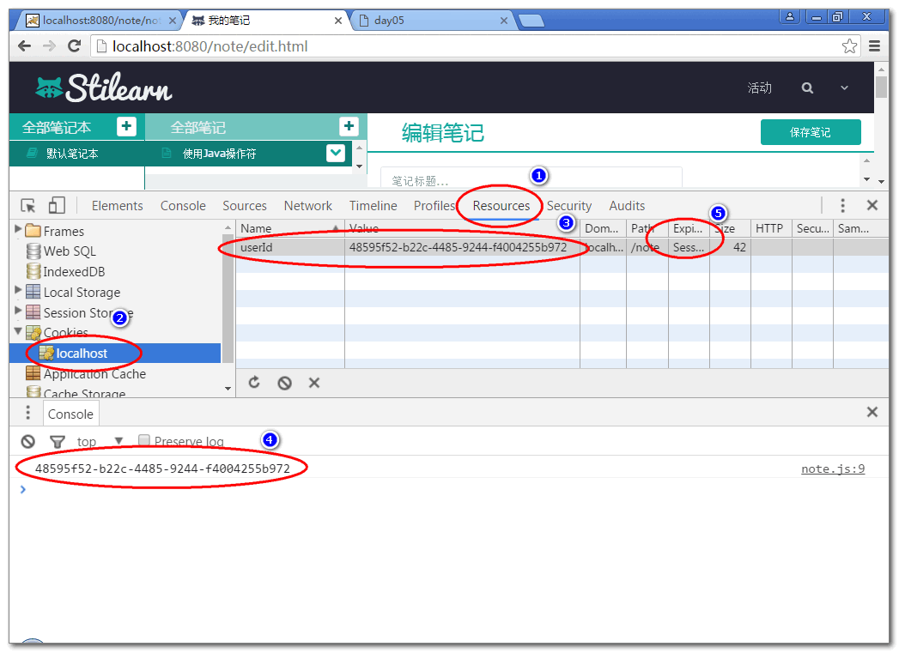
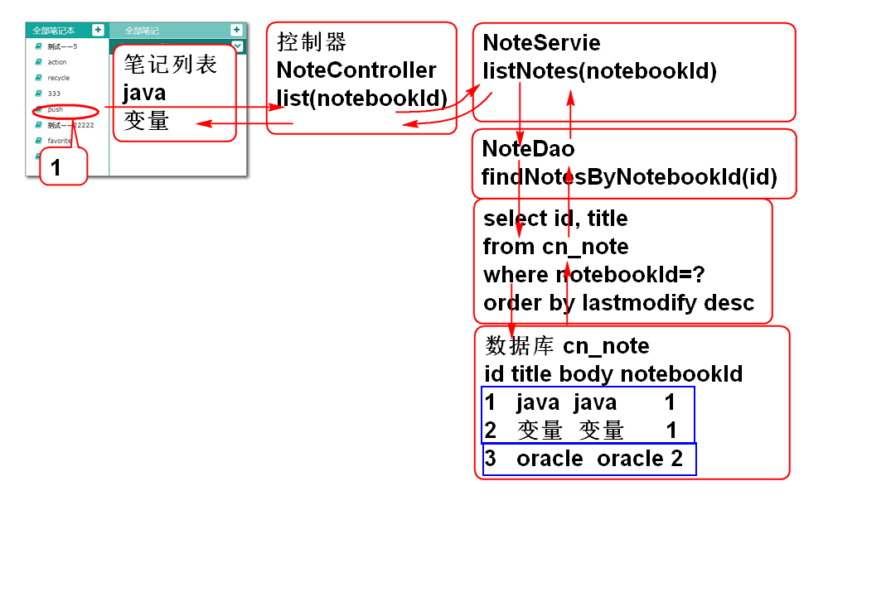

添加控制器父类AbstractController, 封装公共的异常处理方法:
public abstract class AbstractController {
/**
* 在其他控制器方法执行出现异常时候, 执行
* 异常处理方法 handleException
*/
@ExceptionHandler(Exception.class)
@ResponseBody
public Object handleException( Exception e){
e.printStackTrace();
return new JsonResult(e);
}
}
重构 UserController, 使其继承于 AbstractController
略...
创建控制器类 NotebookController:
@RequestMapping("/notebook")
@Controller
public class NotebookController extends AbstractController {
@Resource
private NotebookService notebookService;
@RequestMapping("/list.do")
@ResponseBody
public JsonResult list(String userId){
List<Map<String, Object>> list=
notebookService.listNotebooks(userId);
return new JsonResult(list);
}
}
测试
http://localhost:8080/note/notebook/list.do?userId=52f9b276-38ee-447f-a3aa-0d54e7a736e4
http://localhost:8080/note/notebook/list.do?userId=abc
http://localhost:8080/note/notebook/list.do
测试结果体现了控制器能够利用父类的异常处理方法处理异常情况.
更新log_in.html 引入cookie操作API:
<script type="text/javascript" src="scripts/cookie_util.js"></script>
更新 login.js 的loginAction方法, 在登录成功时候将userId保存到cookie中:
...
//登录成功以后将userId保存到cookie中
addCookie("userId", user.id);
...
在edit.html添加JS脚本:
<script type="text/javascript"
src="scripts/cookie_util.js"></script>
<script type="text/javascript"
src="scripts/note.js"></script>
为了提高页面的用户体验, 减少页面加载延迟, 将脚本在页面后部加载.
添加scripts/note.js 文件:
var SUCCESS = 0;
var ERROR = 1;
$(function(){
var userId = getCookie('userId');
console.log(userId);
});
scripts/note.js 编码一定是 utf-8
测试: 登录以后可以再edit.html 的控制台上能够看到 userId, 可以通过浏览器的控制台检查cookie保存情况:

在ready函数中调用方法 loadNotebooks() 在页面加载后立即加载笔记本列表数据:
//网页加载以后, 立即读取笔记本列表
loadNotebooks();
添加方法loadNotebooks, 利用ajax加载笔记本列表数据:
/** 加载笔记本列表数据 */
function loadNotebooks(){
//利用ajax从服务器获取(get)数据, 使用getJSON方法
var url = 'notebook/list.do';
var data = {userId:getCookie('userId'),
name:'demo'};
$.getJSON(url, data, function(result){
console.log(result);
if(result.state==SUCCESS){
var notebooks = result.data;
//在showNotebooks方法中将全部的
//笔记本数据 notebooks 显示到
// notebook-list 区域
showNotebooks(notebooks);
}else{
alert(result.message);
}
});
}
提示: 为了保存代码的简洁, 将显示笔记本列表的算法封装到showNotebooks方法中.
声明showNotebooks方法, 显示在notebook-list区域的ul中显示笔记本列表信息:
/** 在notebook-list区域中显示笔记本列表 */
function showNotebooks(notebooks){
//算法:
//找显示笔记本列表的区域的ul元素
//遍历notebooks数组, 将为每个对象创建一个li
//元素, 添加到 ul元素中.
var ul = $('#notebook-list ul');
ul.empty();//清除ul中原有的内容
for(var i=0; i<notebooks.length; i++){
var notebook = notebooks[i];
var li = notebookTemplate.replace(
'[name]', notebook.name);
li = $(li);
ul.append(li);
}
}
var notebookTemplate =
'<li class="online">'+
'<a><i class="fa fa-book" title="online" '+
'rel="tooltip-bottom"></i> [name]</a>'+
'</li>';
提示: notebookTemplate 变量定义了显示笔记本的li元素模板. 来自edit.html页面中.
测试...
原理:

声明持久层查询方法 NoteDao
public interface NoteDao {
List<Map<String,Object>>
findNotesByNotebookId(
String notebookId);
}
声明SQL NoteMapper.xml
<mapper namespace="cn.tedu.note.dao.NoteDao">
<select id="findNotesByNotebookId"
parameterType="string"
resultType="map">
select
cn_note_id as id,
cn_note_title as title
from
cn_note
where
cn_notebook_id = #{notebookId}
order by
cn_note_last_modify_time desc
</select>
</mapper>
测试:
public class NoteDaoTest extends BaseTest{
NoteDao dao;
@Before
public void initDao(){
dao = ctx.getBean("noteDao",
NoteDao.class);
}
@Test
//select cn_notebook_id from cn_note;
public void testFindNotesByNotebookId(){
String id="fa8d3d9d-2de5-4cfe-845f-951041bcc461";
List<Map<String, Object>> list=
dao.findNotesByNotebookId(id);
for (Map<String, Object> map : list) {
System.out.println(map);
}
}
}
声明业务层方法 NoteService
public interface NoteService {
List<Map<String, Object>> listNotes( String notebookId)
throws NotebookNoteFoundExcepotion;
}
声明业务异常:NotebookNoteFoundExcepotion
略...
实现业务层方法 NoteServiceImpl
@Service("noteService")
public class NoteServiceImpl implements NoteService{
@Resource
private NoteDao noteDao;
@Resource
private NotebookDao notebookDao;
public List<Map<String, Object>> listNotes( String notebookId)
throws NotebookNoteFoundExcepotion {
if(notebookId==null || notebookId.trim().isEmpty()){
throw new NotebookNoteFoundExcepotion("ID为空");
}
//Notebook notebook = notebookDao
// .findNotebookById(notebookId);
//if(notebook==null){
// throw new NotebookNoteFoundExcepotion("没有笔记本");
//}
int n = notebookDao.countNotebookById(
notebookId);
if(n!=1){
throw new NotebookNoteFoundExcepotion("没有笔记本");
}
return noteDao.findNotesByNotebookId(notebookId);
}
}
重构NotebookDao, 添加统计方法 countNotebookById
int countNotebookById(String notebookId);
添加sql NotebookMapper.xml
<select id="countNotebookById"
parameterType="string"
resultType="int">
select
count(*) as cnt
from
cn_notebook
where
cn_notebook_id = #{notebookId}
</select>
测试 NoteServiceTest:
public class NoteServiceTest extends BaseTest{
NoteService service;
@Before
public void initService(){
service = ctx.getBean("noteService",
NoteService.class);
}
@Test
public void testListNotes(){
String id="fa8d3d9d-2de5-4cfe-845f-951041bcc461";
List<Map<String, Object>> list=
service.listNotes(id);
for (Map<String, Object> map : list) {
System.out.println(map);
}
}
}
添加控制器 NoteController
@Controller
@RequestMapping("/note")
public class NoteController extends AbstractController{
@Resource
private NoteService noteService;
@RequestMapping("/list.do")
@ResponseBody
public JsonResult list(String notebookId){
List<Map<String, Object>> list=
noteService.listNotes(notebookId);
return new JsonResult(list);
}
}
测试:
http://localhost:8080/note/note/list.do?notebookId=d0b0727f-a233-4a1f-8600-f49fc1f25bc9
重构edit.html, 设置笔记本列表ID notebook-list
<div class="col-xs-2" style='padding:0;' id='notebook-list'>
在note.js 的ready方法中绑定 笔记本列表点击事件:
//绑定笔记本列表区域的点击事件
$('#notebook-list').on(
'click','.notebook', loadNotes);
提示: 这里利用事件冒泡, 在父元素上绑定点击事件, Jquery提供的on方法可以非常方便区别发生事件的事件源.
重构: 重构notebookTemplate, 为li元素添加 notebook 类:
var notebookTemplate =
'<li class="online notebook">'+
'<a><i class="fa fa-book" title="online" '+
'rel="tooltip-bottom"></i> [name]</a>'+
'</li>';
添加事件处理方法 loadNotes:
/** 笔记本项目点击事件处理方法, 加载全部笔记 */
function loadNotes(){
var li = $(this);//当前被点击的对象li
//在被点击的笔记本li增加选定效果
li.parent().find('a').removeClass('checked');
li.find('a').addClass('checked');
var url = 'note/list.do';
//li.data('notebookId') 方法可以获取绑定到li
//元素上的数据notebookId, 这个notebookId在
//showNotebooks方法中绑定li元素上的!
var data={notebookId:li.data('notebookId')};
console.log(data);
$.getJSON(url, data, function(result){
if(result.state==SUCCESS){
var notes = result.data;
showNotes(notes);
}else{
alert(result.message);
}
});
}
提示: 笔记本点击时候的选择效果是后续重构过程中添加的.
重构: 重构showNotebooks方法, 将notebookId绑定li元素上
...
for(var i=0; i<notebooks.length; i++){
var notebook = notebooks[i];
var li = notebookTemplate.replace(
'[name]', notebook.name);
li = $(li);
//将 notebook.id 绑定到 li
li.data('notebookId', notebook.id);
ul.append(li);
}
...
添加 showNotes 方法显示笔记到笔记列表区域:
/** 将笔记列表信息显示到屏幕上 */
function showNotes(notes){
console.log(notes);
//将每个笔记对象显示到屏幕的ul区域
var ul = $('#note-list ul');
ul.empty();
for(var i=0; i<notes.length; i++){
var note = notes[i];
var li = noteTemplate.replace(
'[title]', note.title);
li = $(li);
ul.append(li);
}
}
var noteTemplate = '<li class="online">'+
'<a>'+
'<i class="fa fa-file-text-o" title="online" rel="tooltip-bottom"></i> [title]<button type="button" class="btn btn-default btn-xs btn_position btn_slide_down"><i class="fa fa-chevron-down"></i></button>'+
'</a>'+
'<div class="note_menu" tabindex="-1">'+
'<dl>'+
'<dt><button type="button" class="btn btn-default btn-xs btn_move" title="移动至..."><i class="fa fa-random"></i></button></dt>'+
'<dt><button type="button" class="btn btn-default btn-xs btn_share" title="分享"><i class="fa fa-sitemap"></i></button></dt>'+
'<dt><button type="button" class="btn btn-default btn-xs btn_delete" title="删除"><i class="fa fa-times"></i></button></dt>'+
'</dl>'+
'</div>'+
'</li>';
重构: edit.html, 设置笔记列表ID note-list
<div class="col-xs-3" style='padding:0;' id='note-list'>
测试...